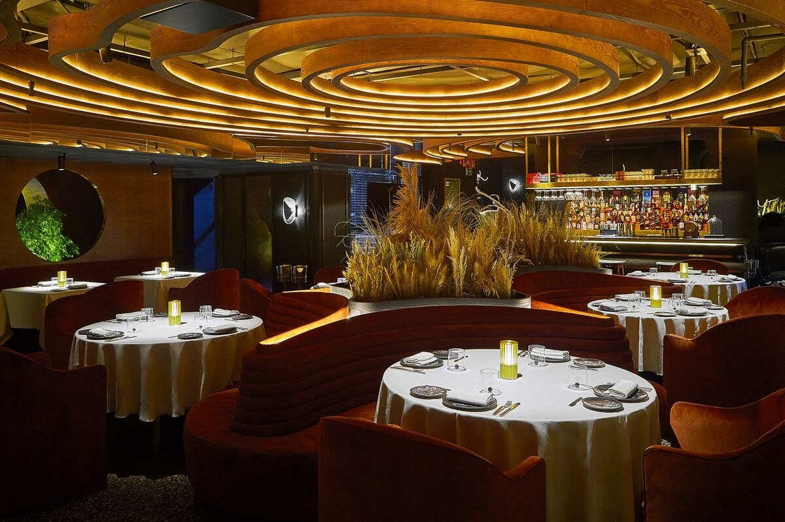

Leña Madrid
Hyatt Regency Hesperia · Paseo de la Castellana, 57

Good choice for: Choose Leña for a sit-down steak dinner in a warm, sculptural room. It works best when grilled meat is the main reason for going. Check the weight and total price of sharing cuts before ordering; this is an indoor dinner choice, without a rooftop view.
Simple plan: book a dinner sitting, choose a vegetable starter and confirm the steak portion with the server. Request a quieter table if conversation matters; seating requests are not guaranteed.
- Reservations
- The official FAQ recommends booking ahead, especially weekends and holidays. Reserve once dates are settled; check festive menus and cancellation terms.
- What to wear
- The venue recommends smart casual. A neat shirt or knitwear, tailored trousers and tidy shoes fit the room.
- Food & drinks
- Grilled meats and vegetables, plus dessert, wine and cocktail menus. Review the menu for cut sizes and prices before choosing a sharing steak.
- Best moment
- An unhurried dinner. Brunch is also advertised; confirm availability for the chosen December date.
Consider: Choose Leña when booking. Smoked Room is a separate dining experience at the same hotel. Holiday opening and special menus need confirmation.
Details: Official FAQs: booking & attireMenus
Selected review
As a returning guest, felt the food had maintained a consistently high standard across visits.
Paraphrased from Enrique Madrid González · Google · Read the source ↗
Source labels this review “a month ago”. Source checked 26 October 2026.
Keep in mind: A repeat-visit endorsement, rather than a recommendation for one particular dish.